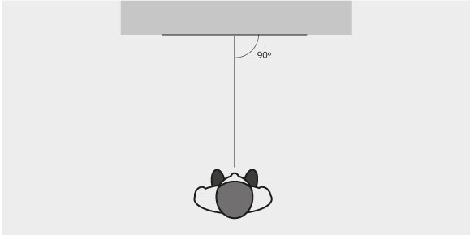
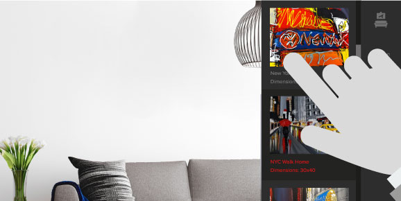
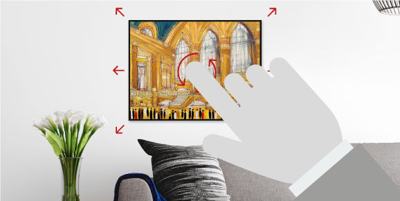

Taking your wall picture
STEP 01
TAKE A PICTURE OF A EMPTY SPACE ON YOUR WALL, OR SELECT PICTURE FROM YOUR IMAGE
LIBRARY TO USE.

For best results, when taking a picture of your wall, make sure you take
it square on and at 90 degrees.
Choose artwork
STEP 02
CHOOSE A PIECE OF ARTWORK FROM ANY OF THE CATEGORIES ON THE RIGHT HAND SIDE
MENU.

If you want to swap the artwork, simply choose a different category and select a new image.
Position artwork
STEP 03
POSITION THE ARTWORK BY DRAGGING, RESIZED AND ROTATING. ROTATE BY PUTTING BOTH
YOUR FINGER AND THUMB ON THE ARTWORK AND ROTATE THE ARTWORK AROUND.

Once happy with the artwork, save your image or send Edward an enquiry.